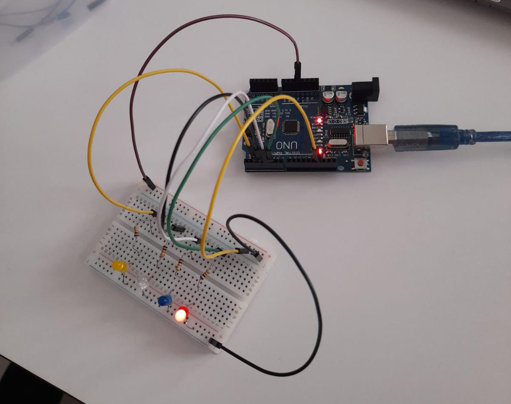
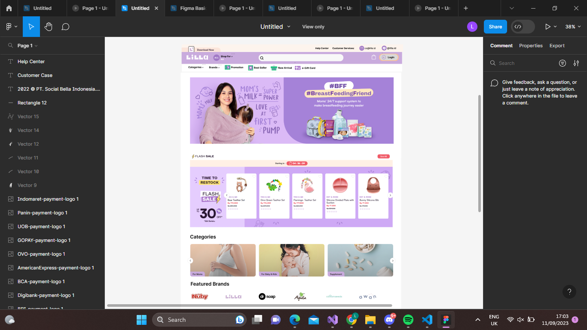

My Projects

Saya pernah membuat project arduino

Ini adalah design aplikasi yang pernah saya buat.

Saya pernah redesign website pada saat ekstrakulikuler Web Engineer pada kelas 10.

Ini adalah design logo untuk aplikasi saya yaitu jasa spa online.

Ini adalah tugas membuat mock up pada saat kelas 10